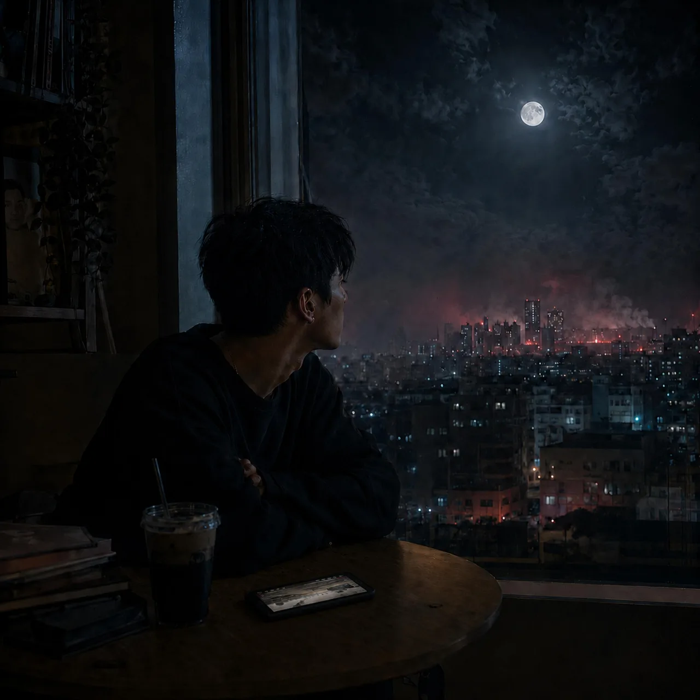

全曲 / Same Night

Same Night
Toyo · late-night pop · 夜ひとりで
夜のニュースで燃えている遠い街にも、同じ月を見上げて家に帰りたい人がいる。
LYRICS
夜のニュースがまた騒いでる 遠い空が赤く燃えてる 専門家が語る理由 でも俺には少し遠い テーブルの上の冷めたコーヒー スマホの通知がまた鳴る 画面の向こうの出来事でも なぜか胸がざわつく 誰が敵で誰が味方 そんな言葉が流れてる 正義の旗を振りながら 街は今日も眠ってる でも画面越しに見えるのは 知らない人の生活で 昨日まで普通だった 家や道や帰り道 同じ夜 同じ空 同じ月を見てる 違う場所 違う国 でも同じ夜を生きてる 遠くで鳴るサイレンの音 窓の外が少し揺れる ニュースの中のその街が 今は自分の街になる 守るものが違うだけ 信じてるものが違うだけ 誰かの敵になったとしても ただ家に帰りたいだけ 瓦礫の中で見上げた空 そこにも同じ月がある 名前も知らない誰かが どこかで今日も祈ってる 同じ夜 同じ空 同じ月を見てる 違う場所 違う国 でも同じ夜を生きてる 線を引いたのは誰なんだ 境界を作ったのは誰なんだ 空には線なんて無いのに 地図の上だけ増えていく もしもこの声が届くなら ただひとつだけ言わせてくれ 遠い国の出来事でも そこには確かに人がいる 同じ夜 同じ空 同じ月を見てる 違う場所 違う国 でも同じ夜を生きてる
NEXT
次に聴くなら


FOLLOW
新曲を、いちばん早く。
Spotify でフォローすると、新曲が「Release Radar」に自動で届きます。